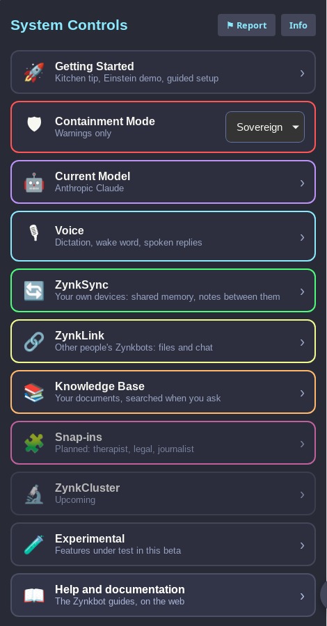

Zynkbot includes a configurable safety layer — local TinyBERT classification runs by default on your device before content reaches any model. Modes are global settings for Zynkbot, as opposed to snap-ins which are industry-specific tools. Choose the containment level that fits your use case, or adjust/create modes for a specific use case.
| Mode | Best For | Behavior |
|---|---|---|
| Guardian | Default — most users | Balanced filtering. Blocks clearly unsafe content. Reasonable defaults for adult use. |
| Child | Family use | Strict content filtering. Conservative topic boundaries. No mature themes. (API call required for child safety) |
| Sovereign | Informed adult use | Warnings shown for sensitive content but not blocked. User makes final call. |
| Witness | Research / professional | No content filtering. Safety layer disabled entirely. Primarily for research and testing. |
| HIPAA | Healthcare settings | PHI detection and flagging. Designed for clinical workflows and compliance environments. (see documentation) |
The safety classifier runs entirely locally — no content is sent to an external moderation service. All modes can be changed at any time through Settings.
